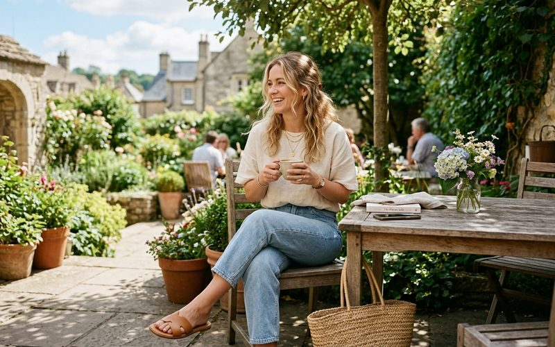

O fim de semana pede roupas que combinem conforto e estilo sem a pressão do ambiente profissional. É o momento de ser mais você, de arriscar uma combinação diferente, de usar aquela peça especial garimpada num sábado de manhã no Outra Vez. E é exatamente aí que o brechó brilha: na diversidade de peças únicas que permitem construir looks memoráveis para cada programa diferente do fim de semana belo-horizontino.
Belo Horizonte tem uma cultura de fim de semana rica — feiras, cafeterias, museus, restaurantes na Savassi, caminhadas no Parque Municipal. Cada programa tem sua linguagem visual, e o guarda-roupa de brechó tem resposta para todas elas.
Para a feira da Afonso Pena ou um café no Savassi, o look certo é aquele que parece espontâneo mas foi pensado. Uma calça jeans de cintura alta — que em brechó aparece nas versões vintage de corte clássico —, uma camisa de algodão levemente oversized amarrada na cintura, tênis branco e uma bolsa de palha ou couro envelhecido. O conjunto é descomplicado, mas cada peça tem personalidade própria. Acrescente óculos de sol de armação vintage e o look está completo.
Para uma tarde no Museu de Arte da Pampulha ou em uma galeria da Savassi, o look pode ser mais expressivo. Um vestido midi estampado de tecido fluido — categoria em que o brechó é especialmente generoso — com sandália de salto baixo e bolsa estruturada. Ou uma saia plissada midi com blusa de seda de cor sólida, tucada por dentro, com mocassim e colar de pedrarias. São looks que conversam com o ambiente cultural sem parecerem overdressed.
Para o jantar de sábado à noite, o brechó oferece uma categoria de peças que o mercado atual raramente replica com a mesma elegância: os vestidos de festa de épocas anteriores. Um vestido midi de veludo, um conjunto de calça e blusa em seda, um vestido slip com blazer estruturado por cima — essas combinações, construídas com peças de brechó de qualidade, têm um apelo que a moda de ocasião atual não consegue imitar. São peças com história, e isso aparece no resultado final.
O fim de semana é o espaço do guarda-roupa onde a personalidade fala mais alto. É onde você pode usar o blazer vintage dos anos 80 que encontrou no Outra Vez, ou o vestido de seda que parece ter sido feito exatamente para o seu corpo. A liberdade do fim de semana é também a liberdade do estilo — e o brechó é o seu melhor aliado para exercê-la com confiança e criatividade.